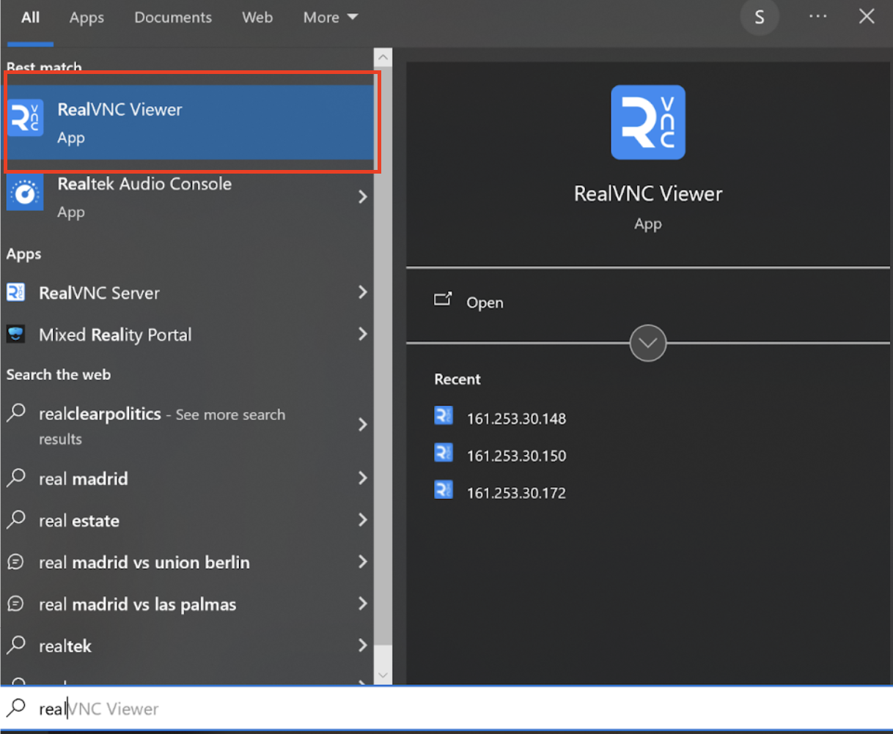
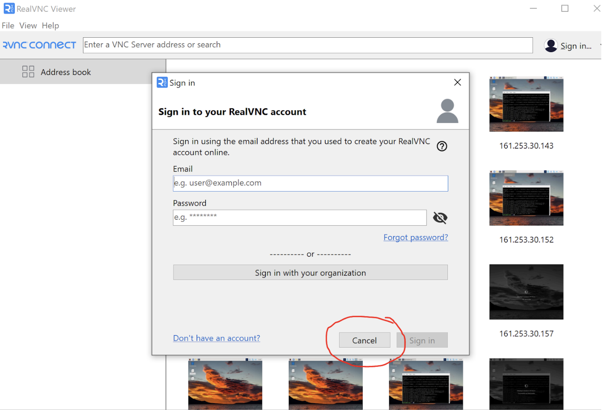
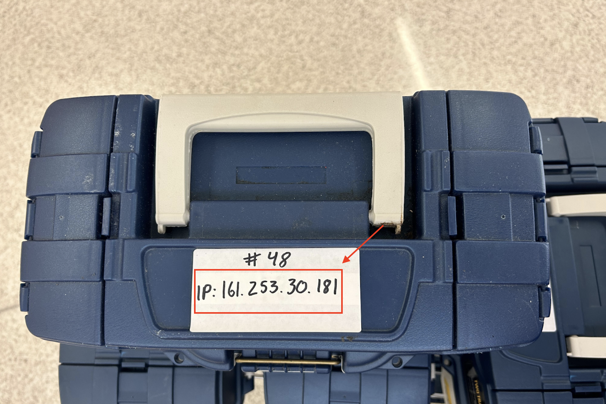
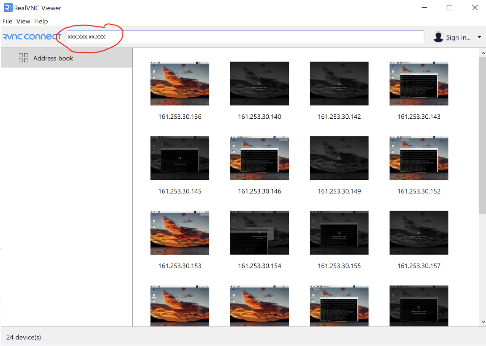
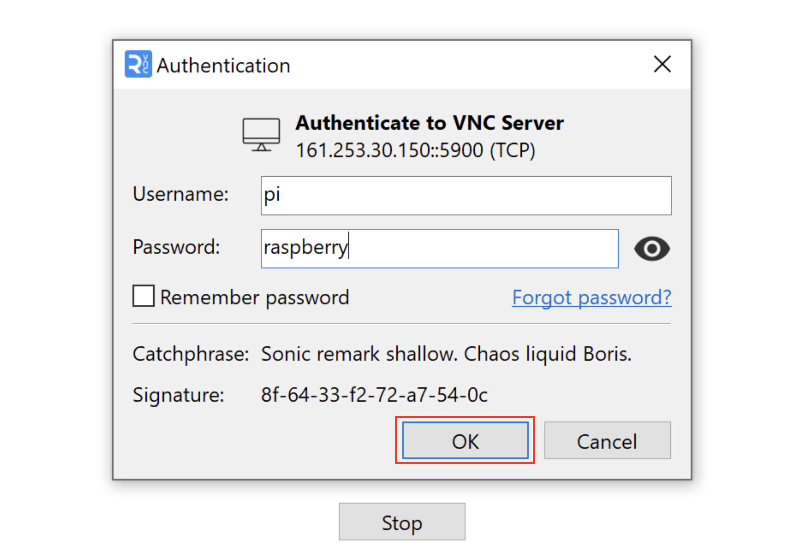
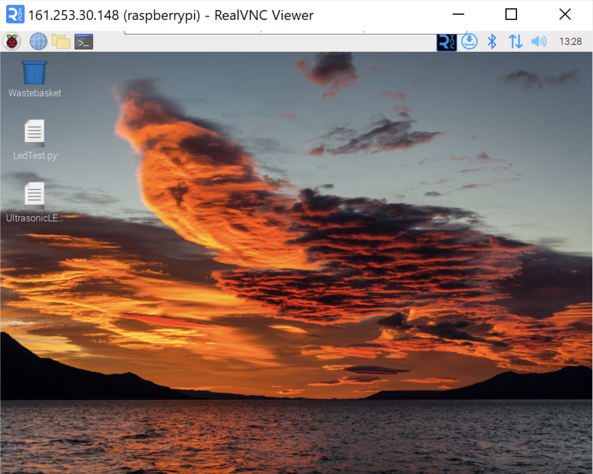

RealVNC Installation Guide for Mac
RealVNC is a remote desktop software that allows you to access your computer from anywhere. Follow the steps below to establish a remote using RealVNC on your Windows computer.
Prerequisites
Before you begin, ensure that you have already installed RealVNC on your Mac.
Establish a Connection
1. Launch RealVNC Viewer
Launch VNC Viewer from Start. If prompted to Log in/Sign Up hit “Cancel”, you’re NOT REQUIRED to sign up.


2. Connect to a Raspberry Pi
To connect to a Raspberry Pi, launch RealVNC Viewer, enter the IP address on the box into the address bar, and hit Enter. You may need to enter the login credentials for the Raspberry Pi.



3. Enjoy Remote Desktop Access
You are now connected to the Raspberry Pi, and you can control it.

4. Disconnect
To disconnect from the Raspberry Pi, simply close the VNC Viewer window.
Conclusion
You have successfully established connection to the Pi, allowing you to access and control it with ease.
For more information and support, you can visit the RealVNC website.